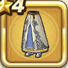

しんりのローブ下
攻略班 5.5点 / 麻痺耐性+5%エレメント系への耐性+10%毒耐性+5%
くわしい特徴
【レベル別習得スキル】 Lv1麻痺耐性+5% Lv4エレメント系への耐性+10% Lv6毒耐性+5% Lv8かいふく魔力+4 Lv10さいだいMP+3 Lv16こうげき魔力+4 Lv20守備力+4 【限界突破スキル】 1凸麻痺耐性+5% 2凸こうげき魔力+3 3凸かいふく魔力+3 4凸さいだいMP+5

攻略班 5.5点 / 麻痺耐性+5%エレメント系への耐性+10%毒耐性+5%
【レベル別習得スキル】 Lv1麻痺耐性+5% Lv4エレメント系への耐性+10% Lv6毒耐性+5% Lv8かいふく魔力+4 Lv10さいだいMP+3 Lv16こうげき魔力+4 Lv20守備力+4 【限界突破スキル】 1凸麻痺耐性+5% 2凸こうげき魔力+3 3凸かいふく魔力+3 4凸さいだいMP+5